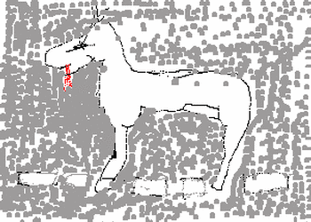

Sunday, May the 9th, 2004
back to: title, date or indexes
Sometimes you have to put Google through its paces. After selecting today's quotation (originally published in 1893, by the way) I decided to look up “bad drawing of a horse”. This yielded two—identical—results, the transcript of a 1982 interview with Andy Partridge, in which he referred to certain record company executives' reactions to the image used for the cover of XTC's English Settlement album:
Mildly disappointed at the paucity of results, I tried again with “bad drawing”+“horse” as my search parameters. This time I got 197 results. A disturbing amount led me to sci-fi and fantasy art fandom sites. Don't even go there. When I had recovered from the resultant headache, and pondered the number of centaurs and unicorns I had stumbled upon, I ploughed on. All I wanted was something to illustrate the quotation, and eventually I found it. Alright, I know it's a child's drawing rather than a bad drawing per se, but, you know, here at Hooting Yard we go to great lengths to entertain and instruct our readers, and we still miss the guiding hand of Mrs Gubbins, whose latest exploits were recorded the day before yesterday.

THIS IS A HORSE